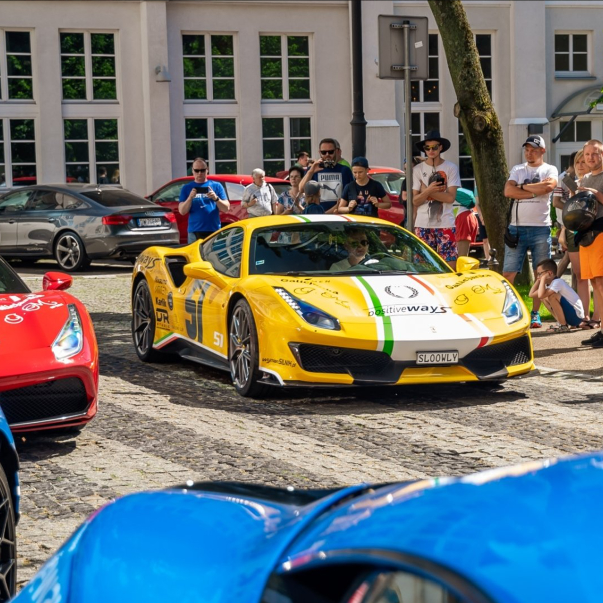
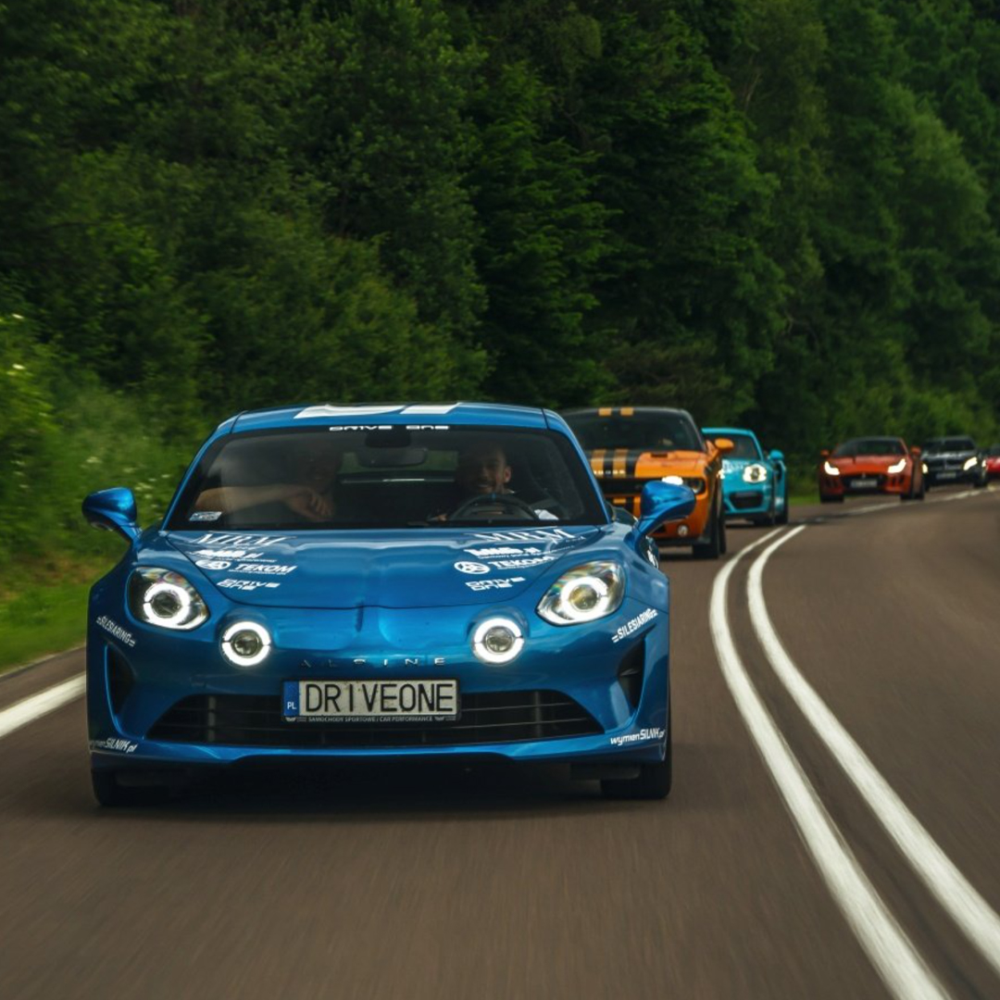

Najbliższe wydarzenie: PositiweWays - Polska dla Hospicjum 2021
Nadchodzące:
PositiweWays - Polska dla Hospicjum 2021 Kolejny raz ruszymy sportowymi rumakami nieść pomoc potrzebującym dzieciakom!
Startuje Positive Ways Polska dla Hospicjum 2021.
Będzie to pełna niesamowitych atrakcji przygoda, która rozpocznie się już 28 maja i potrwa 6 szalonych dni.
Wycieczkę rozpoczniemy w stolicy Małopolski, by po niespełna tygodniu zakończyć ją na nadbałtyckiej plaży.
W tym roku zebrane podczas wyjazdu środki przeznaczymy na remont domów samotnej matki w Poznaniu oraz Kiekrzu pod Poznaniem oraz badania dzieci z wielkopolskich Domów Samotnej Matki.
Czytaj więcej
Gran Turismo Polonia 2021
1-7 July 2021 Wroclaw - Krakow - Warsaw - Poznan Pack your bags, fasten your seatbelt and say good bye to the real world - it is time for a week as a rock star with Gran Turismo Polonia again.
We have been waiting for this moment for many years. Now it is finally time. Starting from next year, Gran Turismo Polonia is not only a track driving event in Poznan. The event will now include the entire country. And - it will be great fun.
Every year will be a different route through Poland. However, the event will always end in Poznan with two days of driving on the amazing racing circuit Tor Poznan which we all love so much.
Czytaj więcej
Minione:
PositiweWays - Polska dla Hospicjum 2020
Positive Ways Polska dla Hospicjum 2020 zakończyliśmy z rekordowym wynikiem 173 000 zł.
33000zł zostało zagospodarowane na wyremontowanie oraz doposażenie sal rehabilitacyjnych.
140 000 zł stowarzyszenie wykorzysta jako wkład własny do pozyskania kredytu unijnego na generalny remont placówki oraz podniesienie budynku o jedno piętro.
Czytaj więcej

PositiweWays - Polska dla Hospicjum 2019
W 2019 podopiecznymi naszej wyprawy były dzieci ze Stowarzyszenia “Tęczowy Domek” w Rzeszowie. Zebraliśmy dla nich łącznie 45 410 zł.
Zebrana kwota została przeznaczona na wycieczkę dla dzieci wraz z opiekunami,
a także jako uzupełnienie potrzebnych środków pieniężnych na zakup specjalistycznego busa.
Czytaj więcej

E-Mail: nekraszseweryn@gmail.com
Instagram